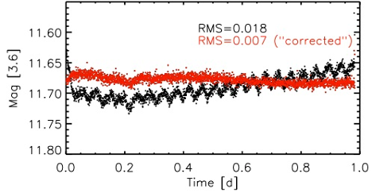

Ann Marie Cody
Astronomer


|
As a member of the Kepler/K2 mission
team and former lead postdoc for the
Coordinated Synoptic Investigation
of NGC 2264, my current research aims to
understand the relationship between young stellar object ("YSO")
variability and the physics operating at the stellar
surface and in the surrounding environment. I am particularly
interested in using time domain studies to map the structure of circumstellar
disks at 0.1-1 AU, and to test magnetospheric accretion models.
Carrying out high precision photometric monitoring at a variety of wavelengths from both ground (e.g., CTIO
1.0-meter and Palomar 60-inch telescopes) and
space-based telescopes (e.g., Spitzer Space Telescope, the French CoRoT satellite, and
the Kepler telecope), my collaborators and I
have uncovered hundreds of variable YSOs, many of them
displaying erratic brightness fluctuations at the 10-100%
level. A number of these light curves have defied
explanation; see the example at right, in which a YSO
underwent eclipse-like dips for five nights in a
row. Could this be the signature of a pre-planetary dust blob? I have
compiled and posted a collection of light
curves of 3-5 million-year-old Sigma Orionis
members from my 2010
ground-based study of that cluster.
With the help of the CSI team, I have developed a new framework for the classification of optical and infrared variability and am now connecting it with physical mechanisms. The overarching goal of this work is to use time series monitoring to better understand star-disk interaction as well as inner disk structure and dust properties in the terrestrial planet formation zone. |
Top: Artist's rendition of a
young star surrounded by a disk (source:
ESO/L. Calçada); |

|
Time series photometry has been an important tool for my work on both the analysis of young
star variability and the search for substellar pulsation. Every telescope and CCD camera has
its own quirks, which introduce systematic errors into the photometry. As part of my PhD
thesis, I developed pipelines for the production of high-precision differential optical and
infrared photometry. For my
ground-based work involving the CTIO 1.0m telescope and
Palomar 60-inch telescope, I combined image subtraction techniques with variable aperture
photometry to generate light curves with precisions to less than 3 millimagnitudes on 1-2
week timescales. The red dots in the top
plot at right show how this method offers
improvement over standard image subtraction
(blue) and fixed-aperture photometry (black).
Precision photometry with Spitzer/IRAC is complicated by the varying intra-pixel sensitivity of this instrument, which is folded into photometry as the telescope pointing wobbles slightly every 40 minutes (previously, 60). Removing the resulting systematics (both a 40-minute oscillation, and a longer term trend) without compromising real stellar variability is a tricky business! I developed a method to correct IRAC light curves by minimizing the pixel-phase signal in frequency space, using periodograms. The before and after light curves are shown at right. K2 data has a similar issue with systematics due to its pointing instability; we are applying similar techniques to detrend the light curves from that mission. |
 Systematic errors are common in ground-based (top) and Spitzer (bottom) photometry. |
| In 2005, Palla & Baraffe proposed that brown dwarfs and very low mass stars young enough to be burning Deuterium might be subject to an oscillatory instability on few-hour timescales. This was an exciting prospect, as the physics of pulsation could be potentially used to probe the interiors of these objects, providing information inaccessible via other observational methods. There are currently no known forms of stellar oscillation observable in the very-low-mass regime (apart from Jupiter!). Thanks to many dedicated photometric and spectroscopic surveys of young clusters, there are now hundreds of catalogued brown dwarfs and very-low-mass stars in the 1-5 million year age range, many of which have stellar parameters overlapping Palla & Baraffe’s instability strip. For my PhD thesis, I developed a photometric monitoring campaign to search for low-amplitude periodic variability in young brown dwarfs and very low mass stars using meter-class telescopes from both the ground (Palomar & CTIO) and space (Spitzer & HST). The resulting high-precision, high-cadence time-series photometry targeted the four young clusters IC 348, Sigma Orionis, Chamaeleon I, and Upper Scorpius, and it achieved sensitivity to periodic oscillations with photometric amplitudes down to several millimagnitudes. |
The instability strip (blue) on for pulsating brown dwarfs on the H-R diagram, as predicted by Palla & Baraffe (2005). Overplotted are the luminosities and temperatures of very low mass objects in several young clusters, suggesting that a number of these should be unstable to the deuterium burning instability. |
|
This unprecedented variability census probed timescales ranging from
minutes to weeks in a sample of ~200 young, low-mass cluster members. Analysis of the data has led to the
establishment of a lower limit for the timescale of periodic photometric variability in young low-mass and
substellar objects, an extension of the rotation period distribution to the brown dwarf regime, as well as
insights into the connection between variability and circumstellar disks in the Sigma Orionis and Chamaeleon
I clusters.
For the full results, check out my thesis. Further results of this work are in preparation for publication. |
| Over the past 10 years, hundreds of planets have now been discovered orbiting nearby stars in our Galaxy. I enjoyed participating in the Harvard College Research Program as an undergrad, during the time that these extrasolar worlds were first being discovered. With Dimitar Sasselov, I generated stellar evolution tracks for planet-bearing stars, showing how theoretical models can help pin down the radii of transiting planets. It was noted early on that stars hosting so-called "hot Jupiters" exhibit higher surface metallicities than random samples of field stars. One hypothesis was that this enhanced metallicity was the direct result of rocky planet material falling into the star and mixing within its convection zone. I created stellar interior and evolution models to explore this effect. With Douglas Gough, I further showed that a metal-enhanced convection zone maybe produce a detectable signal in the frequency differences measured for solar-like oscillations, using the techniques of asteroseismology. My M.Phil. thesis from the University of Cambridge details this prediction. Today, primordial effects are the favored hypothesis for the high metallicities in giant planet hosts - but it was nevertheless a very fun problem to work on! | The addition of extra metals to a star's convection zone causes changes in opacity, which in turn shift the effective temperature of the star toward lower values. |